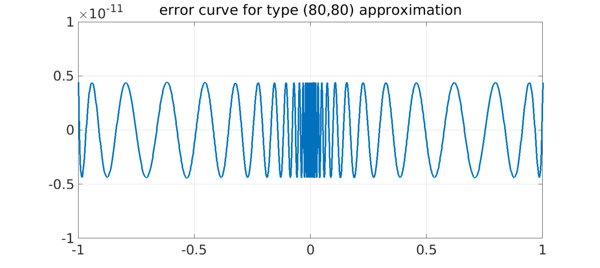

Rational functions are powerful because they can approximate functions closely near singularities, but the same power makes them difficult to work with. If you represent a rational function in the obvious way as a polynomial quotient $r = p/q$, then in interesting cases $p$ and $q$ will vary by many orders of magnitude over the region of interest. This can make computation in floating point arithmetic effectively impossible.
A solution to this problem is to represent $r$ in barycentric form instead, $r = N/D$, where $N$ and $D$ are partial fractions based on certain adaptively selected support points. This idea led to the Chebfun aaa algorithm a few months ago [2], and now it has further led to an improvement in our capabilities for rational best approximation on an interval. The old remez code has been replaced by a new and much more powerful minimax command [1]. We believe this is the most powerful implementation of the Remez algorithm ever produced.
As a famous example in this area, let us consider type $(n,n)$ rational approximation of $|x|$ on $[-1,1]$ for various $n$. Up to 2016, Chebfun's remez code was only able to go up to $(8,8)$. For example, on p. 192 of [3], a plot is presented of errors up to type $(50,50)$, but they are taken from a table rather than computed on the fly.
Now, by contrast, here we go to type $(80,80)$. Chebfun has to work a bit, but the computation is successful.
x = chebfun('x'); f = abs(x);
tic, [p,q,r] = minimax(f,80,80,'silent'); toc
xx = linspace(-1,1,3000).^3;
LW = 'linewidth'; FS = 'fontsize';
plot(xx,f(xx)-r(xx),LW,3)
grid on, ylim(1e-11*[-1 1])
title('error curve for type (80,80) approximation',FS,36)
Elapsed time is 21.560009 seconds.

Computing such an approximations in ordinary 16-digit arithmetic, so far as we know, is unprecedented. Varga, Carpenter, and Ruttan computed these approximations in the 1990s using 200-digit extended precision [4].
The difficulty lies with the exponentially clustered equioscillation points (and poles along the imaginary axis, clustering near $x=0$). This clustering makes a $p/q$ representation out of the question. To show the exponential effect, we can plot the right half of the error curve on a semilogx scale:
xx = logspace(-14,0,5000);
semilogx(xx,f(xx)-r(xx),LW,3)
grid on, axis([1e-14 1 -1e-11 1e-11])
title('semilogx scale',FS,36)
Floating-point computing with rational functions like this has been effectively impossible in the past; we seem to be entering a new era.
References
-
B. Beckermann, S.-I. Filip, Y. Nakatsukasa, and L. N. Trefethen, Rational minimax approximation via adaptive barycentric representations, to appear.
-
Y. Nakatsukasa, O. Sete, and L. N. Trefethen, The AAA algorithm for rational approximation, arXiv 2016:1612.00337.
-
L. N. Trefethen, Approximation Theory and Approximation Practice, SIAM, 2013.
-
R. S. Varga, A. Ruttan, and A. D. Carpenter, Numerical results on best uniform rational approximation of $|x|$ on $[-1,+1]$. Mathematics of the USSR-Sbornik 74 (1993), 271.